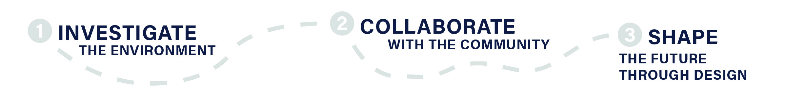

Jade Nichols
Jade Nichols is a landscape architecture master's student at CCNY Spitzer with an urban planning degree from Cornell University and LEED GA certification. He combines community engagement, spatial data analysis, and design to create thriving urban spaces that combine beauty with utility. His work spans park redesigns in upstate New York, streetscapes in Cleveland, and neighborhood engagement in Rome. He is currently focused on public space as coastal resilience infrastructure in NYC.
